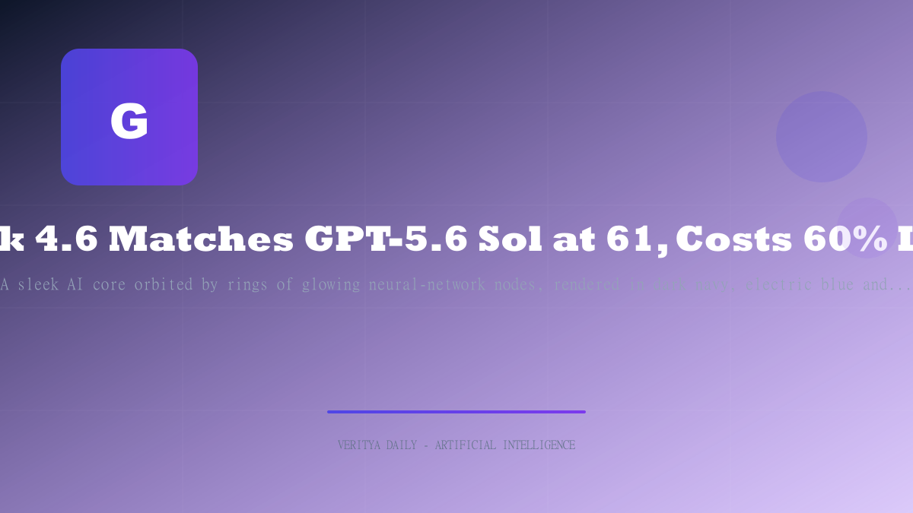

Grok 4.6 Matches GPT-5.6 Sol at 61, Costs 60% Less

📑 Table of Contents
For most of the past year, Grok has been the runner-up that couldn't close the gap. That changed this week. SpaceXAI — Elon Musk's AI company, formerly xAI, acquired by SpaceX in February 2026 — unveiled Grok 4.6 on August 12, and the numbers look like a different product line entirely. The model scores 61 on the Artificial Analysis Intelligence Index, matching GPT-5.6 Sol Max and ranking third overall behind Claude Opus 5 (63) and Claude Fable 5 (62). It also shipped just 35 days after Grok 4.5, and at $2 per million input tokens and $6 per million output tokens, it undercuts the frontier's headline pricing by more than 60%.
For a company that spent a year trailing OpenAI and Anthropic on every headline benchmark, it is the strongest comeback story in AI this month — on paper, at least. The caveats matter, and we'll get to them.
The Score That Ends a Year of Playing Catch-Up
The 61-point score is a five-point jump over Grok 4.5 High, which sat at 56, and it pushes the model past Kimi K3 into third place on the index. According to SpaceXAI, the gains come from a focus on long-running agents, complex visual projects and coding, with stronger self-testing on longer trajectories. The company describes Grok 4.6 as built on 1.5 trillion parameters — a figure that, like all vendor parameter counts, has not been independently verified.
The benchmark table tells the improvement story. Grok 4.6 hits 69.9% on CursorBench v3.2 and 65.9% on DeepSWE v1.1, up from 54% on Grok 4.5. It scores 61.3% on FrontierCode v1.1 Extended, and edges GPT-5.6 Sol Max on agentic software engineering, 57.5% to 56.7% on APEX-Agents. The pattern is consistent: big gains where agents write and verify code, and real progress on the reasoning-heavy evaluations where Grok previously stumbled.
What It Beats — and What It Still Doesn't
The wins are real but selective. Grok 4.6 overtakes Kimi K3 and matches GPT-5.6 Sol Max at the index level, and it beats the Sol model head-to-head on APEX-Agents. But it remains behind Claude Opus 5 and Claude Fable 5 overall, and the widest gap in its own benchmark table is Terminal-Bench v3.0, where it scores 26% against GPT-5.6 Sol Max's 34.6%.
Terminal-Bench measures real command-line work — the kind of multi-step terminal operations that production agents are increasingly asked to handle. That gap matters for enterprises that need reliable shell-level autonomy, not just strong code generation. SpaceXAI itself flags methodological caveats on its benchmark claims, and every figure in this section is company-reported. Treat the table as a directional signal, not an audited result.
The Enterprise Story Is Cost Per Task, Not Cost Per Token
The pricing is where Grok 4.6 becomes an enterprise story rather than a benchmark footnote. At $2 per million input tokens and $6 per million output tokens — rates that apply below 200K context and double above it — SpaceXAI undercuts Claude Opus 5 ($5/$25) and GPT-5.6 Sol ($5/$30) by more than 60% on headline list prices, per VentureBeat.
| Model | Input (per 1M tokens) | Output (per 1M tokens) |
|---|---|---|
| Grok 4.6 | $2 | $6 |
| Claude Opus 5 | $5 | $25 |
| GPT-5.6 Sol | $5 | $30 |
Grok 4.6's $2/$6 rates apply below 200K context; they double to $4/$12 above that threshold. The context window itself stretches to 500K tokens — enough for long agent runs without mid-task compaction.
Artificial Analysis, which tracks the real cost of running its benchmark suite, puts Grok 4.6 High at roughly $1,068 per run versus $2,823 for GPT-5.6 Sol Max — about 2.6x cheaper per task at comparable intelligence. For teams running agents that burn millions of tokens a day, that is the difference between an experiment and a production workload.
Availability is broad for a model this young: Grok Build (SuperGrok at $30/month), the newly acquired Cursor, OpenRouter, Vercel and Cloudflare. SpaceXAI has moved from a consumer chatbot to a distributed platform play in a single release cycle.
A 35-Day Turnaround, and a 4.7 Already Teased
The release cadence is itself the signal. Grok 4.6 arrived 35 days after Grok 4.5, a compression that suggests an aggressive internal loop. Musk is already talking about the next step: at the launch he said a more advanced Grok 4.7 will be ready within three to four weeks.
At an all-hands the day before the release, he went further, predicting that next month, AI revenue will surpass the combined revenue of all other SpaceX business divisions. That claim, if it lands, would mark a historic shift inside a company whose AI arm only came into existence as a standalone division a few years ago — and it frames the pricing strategy: cheap tokens, sold at scale, are the point.
The Baggage That Comes With the Benchmark Lead
None of this erases the brand-safety question that has shadowed Grok for two years. The 2025 "MechaHitler" and white-genocide incidents, plus a January 2026 Ofcom investigation into X/Grok image generation, remain fresh in enterprise buyers' minds. VentureBeat notes these incidents may deter exactly the procurement teams that the aggressive pricing is designed to attract.
A model can match the frontier on intelligence and still lose deals on trust. Grok 4.6 is the strongest product SpaceXAI has shipped — competitive on score, aggressive on price, fast on cadence. Whether enterprises adopt it will depend less on the benchmark table and more on whether the company can close the governance gap as quickly as it closes the intelligence gap. The score says the comeback is real. The next 35 days will say whether it lasts.
Benchmark and pricing figures above are vendor-reported and have not been independently audited.